- Monkey D. Luffy (Capitão)
- Quando criou a tripulação: Saga East Blue / Arco Romance Dawn / Episódios 1 e 2
- Akuma no Mi: Gomu Gomu no Mi (Fruta da Borracha)
- Função no grupo: Capitão
- Roronoa Zoro (Espadachim)
- Ittoryu, Nitoryu e Santoryu: Zoro domina o Ittoryu (Estilo Uma Espada), o Nitoryu (Estilo Duas Espadas), e desenvolveu por conta própria o Santoryu (Estilo Três Espadas). Neste último, ele usa uma espada em cada mão enquanto leva outra na boca. Os três estilos são usados para ataques de alta velocidade e ataques de projeção de ar comprimido. O Santoryu permite que ele combine os dois tipos de ataques em uma mesma técnica.
- Flying Slash Attack: Ataque à distância no qual Zoro atinge seu inimigo a pressão do ar que provoca com seus golpes de espada.
- Kyutoryu (forma Ashura): Zoro é capaz de contactar a entidade Ashura, ligação a partir da qual ele despertou um estilo de espada no qual adquire a aparência temporária de ter seis braços e três cabeças, sendo assim capaz de usar nove espadas ao mesmo tempo.
- Quando entrou para a tripulação: Saga East Blue / Arco Romance Dawn / Episódios 1 e 2
- Akuma no Mi: Não possui
- Função no grupo: Espadachim
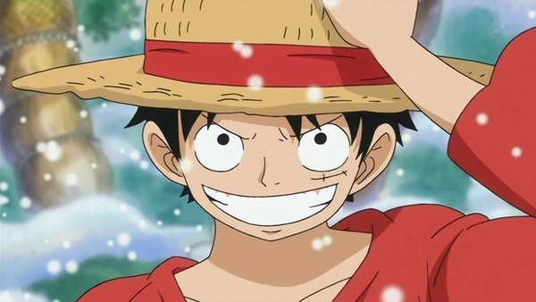
História
Monkey D. Luffy é neto de Monkey D. Garp, Vice-Almirante da Marinha e
arqui-inimigo de Gol D.
Roger, que fez história
no mundo como o Rei dos Piratas e o dono original do tesouro One Piece. Ainda assim, desde
jovem, Luffy quis seguir os
passos dos piratas que admirava, como Shanks e o próprio Roger.
Ainda criança, ingeriu acidentalmente a Gomu Gomu no Mi, fruta que lhe proporcionou
poderes
de borracha.
Suas habilidades foram desenvolvidas consideravelmente ao
longo do anime, permitindo-lhe
criar e aperfeiçoar diferentes
golpes poderosos.
Já mais adulto, "Luffy do Chapéu de Palha", como ficou conhecido, fundou sua
própria tripulação,
os Piratas do Chapéu de Palha.
Como capitão da equipe, Luffy percorre a
Grand Line recrutando novos membros e
enfrentando
diferentes inimigos.
Tudo isso em busca de alcançar seu sonho de se tornar o novo Rei dos Piratas e
encontrar o
tesouro One Piece.
Neste caminho, o jovem pirata conquistou uma reputação mundial de ser quase insano por já
ter atacado as três instalações
governamentais mais importantes e escapado com vida.
Atualmente, Luffy faz parte do grupo conhecido como "Pior Geração", que
reconhece os 12 piratas
cujas ousadas ações contra o Governo Mundial lhe renderam uma
recompensa acima de
$100.000.000.
A do Luffy é $3.000.000.000.
-
Capacidades físicas sobre-humanas: além de velocidade, agilidade e
reflexos aprimorados, Luffy tem uma força inacreditável, sendo capaz de
quebrar materiais resistentes como aço e concreto.
-
Capacidade de cura: além da resistência que suas habilidades de borracha
lhe proporcionam, Luffy pode se curar de intensos ataques.
-
Haki: por ser capaz de usar as três formas de Haki (uma das poucas pessoas
conhecidas com essa capacidade), Luffy pode aumentar seus
poderes e habilidades e prever ataques.
-
Akuma no Mi: no decorrer de sua trajetória e de seus treinamentos, Luffy
desenvolveu diferentes técnicas unindo suas habilidades de luta com
seus poderes de borracha, geralmente usando recursos como esticar partes de seu corpo para que possa atingir inimigos à distância ou com maior potência.

História
Primeiro pirata a ser recrutado por Luffy para os Chapéus de Palha - convite feito no episódio 2 e oficialmente aceito no 3 - Zoro também está entre os quatro integrantes mais poderosos do grupo, além de, assim como seu capitão, fazer parte da Pior Geração, com uma recompensa de $1.111.000.000. Enquanto Luffy sonha em se tornar o Rei dos Piratas, o sonho de Zoro é um dia ser o melhor espadachim do mundo.
Embora tenha uma personalidade que misture uma seriedade quase constante com um humor desajeitado, Zoro conquistou os fãs do anime e acabou se tornando, por vezes, alívio cômico dos episódios, devido a sua completa falta de direção. Além disso, sua amizade com Luffy é icônica. O pirata, inclusive, aceitou o convite para integrar os Chapéus de Palha após o capitão salvar sua vida. É comumente visto com suas três espadas. Um dos mistérios em torno de Zoro surgiu após o salto temporal que ocorre depois da Saga Guerra de Marineford, quando o pirata apareceu com uma cicatriz que mantém seu olho esquerdo permanentemente fechado. A falta de explicações sobre o ferimento já provocou teorias diversas entre os fãs.
Poderes
História
Antes de se tornar a terceira integrante dos Chapéus de Palha, Nami chegou a se infiltrar no grupo com a intenção de roubá-los. Vamos com calma! A jovem perdeu seus pais na guerra ainda bem criança e foi adotada por Bell-mère, uma mulher da Marinha. Tudo ia bem até que o pirata Arlong chegou ao vilarejo em que elas moravam, matou a mãe adotiva de Nami e sequestrou a garota para que ela pudesse fazer mapas para ele, ofício para o qual sempre mostrou aptidão.
Nami passou oito anos sob o domínio de Arlong, até que recebeu a missão de tentar roubar os Chapéus de Palha. Para sua surpresa, a tripulação de Luffy conseguiu se rebelar e vencer Arlong. Desde então, por volta do episódio 6, ela se uniu a Luffy e Zoro e passou a atuar como cartógrafa e tesoureira da equipe, tendo ainda como motivação seu sonho de fazer um mapa do mundo inteiro.
Junte a isso as habilidades de Nami como navegadora e seus poderes de mudar o clima, e podemos concluir que a adição da jovem à tripulação foi de fato de grande peso. Sua recompensa é de $366.000.000.
- Quando entrou para a tripulação: Saga East Blue / Arco Orange Town / Episódios 6
- Akuma no Mi: Não possui
- Função no grupo: Cartógrafa e Tesoureira
Poderes
- Arte do Tempo: a sensibilidade que Nami já possuía em pressentir o clima foi canalizada no artefato Clima-Tact, uma espécie de bastão criado por Usopp (falamos dele mais a seguir) com o qual ela consegue controlar as condições climáticas próximas a sua localização. A partir dessa nova habilidade, a pirata desenvolveu diferentes técnicas de combate.
- Perfect Clima-Tact: Nami pode criar duplicatas de si mesma usando névoa (após um aperfeiçoamento do Clima-Tact).
- Sorcery Clima-Tact: Nami usa o Clima-Tact para controlar raios e usá-los como arma (depois do salto temporal).
- Fourth Clima-Tact: Com o novo Clima-Tact acriado por por Usopp e Franky, Nami intensifica o poder de todas as suas técnicas.
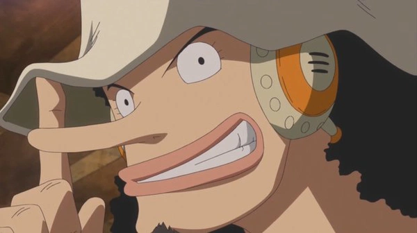
História
A origem de seu nome ("Uso", em japonês, quer dizer "mentira" ou "falsidade"), seu nariz comprido e suas constantes histórias fantásticas fizeram com que Usopp ganhasse fama de mentiroso. Contudo, o pirata é um homem sensível, e suas narrativas incríveis, inclusive, surgiram como mecanismo de defesa. São uma forma que ele encontrou, ainda criança, de lidar com a morte da mãe e o abandono do pai.
Usopp passa a integrar os Chapéus de Palha durante no Arco Vila Syrup. Contudo, ele é sensível e inseguro por conta de seu passado. E isso faz com que ele abande os Chapéus de Palhapor um tempo. Após entrar para o grupo com o sonho de se tornar um grande pirata, ele entra em conflito com Luffy e não se sente bom o suficiente para fazer parte da equipe. Usopp, contudo, não só retorna à equipe, no Arco Pós-Enies Lobby, como mostra grande desenvolvimento no decorrer do anime.
Após o salto temporal, o pirata demonstrou dominar nossas habilidades de combate. Além disso, ele conta com seu talento nato como atirador e com sua criatividade para desenvolver diferentes inventos, incluindo o Clima-Tact, artefato com o qual Nami controla o clima. Não à toa, a recompensa de Usopp, que já foi de $500.000.000, atualmente é de $200.000.000.
- Quando entrou para a tripulação: Saga East Blue / Arco Vila Syrup / Episódios 9 ao 18
- Sai na Saga Water 7 / Arco Water 7 / Episódios 227 ao 265
- Retorna na Saga Water 7 / Arco Pós Eenies Lobby / Episódios 313 ao 325
- Akuma no Mi: não possui
- Função no grupo: atirador
Poderes
- Tiro::Usopp é um habilidoso atirador que usa sua incrível mira e seus conhecimento de engenharia para acertar alvos a grandes distâncias, seja com sua baladeira/estilingue, seja com canhões.
- Inventos: Além do Clima-Tact, Usopp criou sua arma Kabuto, uma espécie de estilingue com cinco elásticos conectados, o que faz com que a força e a precisão do tiro seja ainda maior.
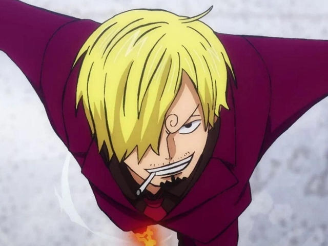
História
Sanji é o terceiro filho da família nobre Vinsmoke, e cresceu em meio a maus tratos de seus parentes próximos. Seus irmãos faziam bullying com ele na infância menosprezando sua atitude de alimentar aqueles que seu pai julgava inferiores e a quem não dava atenção. O patriarca via o filho como a vergonha da família. Sanji renunciou seu título de príncipe do Reino Germa e cortasse os laços com todos quando tinha apenas oito anos de idade.
O menino atravessou a Red Line em direção ao East Blue, onde trabalhou como cozinheiro em um navio, até ser salvo de um naufrágio pelo sous-chef Zeff. Sanji acabou se tornando aprendiz de Zeff por anos, no restaurante em que, um dia, conhece Luffy. Após Sanji entrar em uma briga com um tenente da Marinha por desperdiçar comida, ele acaba alimentando um fugitivo que tinha fome às escondidas. O capitão dos Chapéus de Palha vê o ato gentil e o convida para integrar a tripulação.
Após diversos conflitos com diferentes inimigos, Sanji aceita o convite de Luffy apenas no final do Arco Baratie, no episódio 30. Sua motivação é seu sonho de encontrar o suposto paraíso dos chefs, All Blue. Esse lendário mar místico seria o ponto de encontro de East Blue, West Blue, North Blue e South Blue, e contaria com com vida selvagem dos quatro oceanos. Quinto integrante do grupo, no qual passou a atuar como cozinheiro, Sanji se destacou rapidamente. Atualmente figura como um dos quatro melhores lutadores da tripulação - junto a Luffy, Zoro e Jinbe - e detentor da terceira maior recompensa da equipe, no valor de $1.032.000.000.
- Entrou para a tripulação: Saga East Blue / Arco Baratie / Episódio 30
- Akuma no Mi: Não possui
- Função no grupo: Cozinheiro
Poderes
- Capacidades físicas sobre-humanas: seu treinamento lhe proporcionaram força, velocidade e resistência inacreditáveis Sanji pe capaz de destruir até mesmo metal apenas com sua força física.
- Estilo de luta único: unindo técnicas de lutas como capoeira, Taekwondo e savate, Sanji desenvolveu seu próprio estilo de luta, criando técnicas com as quais consegue, por exemplo: correr embaixo da água, saltar de grandes alturas e se locomover criando barreiras sonoras no ar com sua velocidade.
- Diable Jambe: nesta técnica, Sanji eleva a temperatura de suas pernas até que elas ganhem a aparência e o poder de fogo vivo.
- Haki: o pirata é capaz de usar Kenbunshoku Haki, com o qual pode sentir a presença de outras pessoas mesmo a grandes distâncias, e Busoshoku Haki. Com este último, consegue criar uma espécie de armadura invisível em torno de si mesmo.
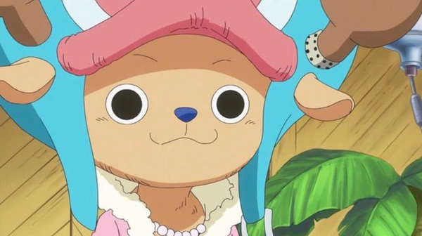
História
Sexto integrante dos Chapéus de Palha e um dos poucos que nasceram na Grand Line, Tony Tony Chopper era uma rena comum até ingerir a fruta Hito Hito no Mi, que lhe deu não apenas características humanoides, como também grande inteligência e a capacidade de alterar a forma física de seu corpo. Após desastrosas primeiras interações com os humanos, Chopper foi resgatado pelo Dr Hiriluk, que ajudou a jovem rena a se tornar um médico, sendo ensinado ainda por seis anos pela Dra. Kureha.
Descontraído, é um dos primeiros a se juntar às brincadeiras de Luffy e Usopp. Seu primeiro contato com o grupo, contudo, não foi exatamente positivo. Sua desconfiança com humanos foi apenas acentuada pelas brincadeiras de Luffy e Sanji sobre cozinhá-lo. As habilidades médicas de Chopper, porém, fizeram Luffy convidá-lo para integrar a tripulação, convite que ele aceita no final do arco Ilha Drum, no episódio 91, motivado também pela lembrança do desejo do Dr. Hiruluk de que ele navegasse pelo mundo e ampliasse seus horizontes médicos.
Conforme controlou cada vez mais os poderes que a Hito Hito no Mi lhe proporcionou, ele já conseguiu assumir sete formas diferentes. Crescer seus pelos, aumentar seus músculos, diminuir seu peso e aprimorar sua velocidade são alguns dos recursos que consegue alcançar a partir dessas transformações. Sua recompensa é de $1000, por ele ser confundido com um mascote frequentemente.
Quando entrou para a tripulação: Saga Alabasta / Arco Ilha Drum / Episódio 91
Akuma no Mi: Hito Hito no Mi (Fruta Humano-Humano)
Função no grupo: médico
Poderes
- Horn Point: provoca o crescimento de seus chifres.
- Jumping Point: assume uma forma mais humana, bípede, e aumenta o tamanho de suas pernas para ganhar velocidade e dar grandes saltos.
- Arm Point: amplia seus músculos, numa forma humanoide que deixa seus cascos dianteiros extremamente fortes.
- Monster Point: Chopper fica com mais de 6 metros de altura, ganhando uma força monstruosa, ganha três chifres.
- Guard Point: Seu pelo cresce impedir ataques externos como uma armadura.
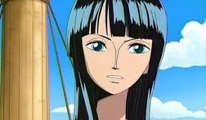
História
Quando entrou para a tripulação: Entra no final da Saga Alabasta / Arco Alabasta (Episódios 92 ao 130)
Quando sai da tripulação: Sai na Saga Water 7 / Arco Water 7 (Episódio 227 ao 265)
Quando retorna para a tripulação: Retorna ainda na Saga Water 7 / Arco Enies Lobby (episódios 266 ao 312)
Akuma no Mi: Hana Hana no Mi (Fruta da Flor)
Função no grupo: arqueóloga e historiadora
Sétima integrante dos Chapéus de Palha, Nico Robin atua como a arqueóloga e historiadora do grupo. Única sobrevivente da ilha de Ohara, a jovem é atualmente a única pessoa capaz de ler Poneglyphs, ato considerado um risco para o Governo Mundial. Considera que seus colegas de tripulação não apenas a salvaram, mas também reviveram seu sonho de alcançar a liberdade para viajar o mundo estudando seus mistérios. Sua recompensa é de $930.000.000.
Nico alcançou um incrível preparo físico durante sua vida de batalhas e fugas. Além disso, ela comeu a fruta Hana Hana no Mi, que lhe concedeu a habilidade de replicar partes de seu corpo em qualquer superfície, sejam objetos, outros seres vivos ou em seu próprio corpo.
Poderes
- Clutch: com essa técnica, ela replica suas mãos nas costas do oponente e as usa para atacá-lo sem que ela possa revidar.
- Cuerpo Fleur: Doble Clutch: Nico cria um clone seu e replica quatro braços a mais para si mesma e para seu clone, aumentando seu poder de ataque.
- Ojos Fleur: com essa técnica de espionagem, ela é capaz de replicar seus olhos em um objeto ou no corpo de outra pessoa, mesmo a longas distâncias.
- Oreja Fleur: também útil para conseguir informações sigilosas, ela replica suas orelhas onde desejar.
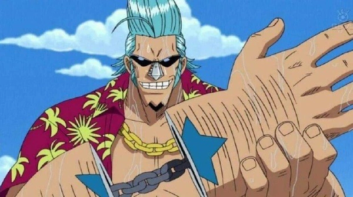
Quando entrou para a tripulação: Saga Water 7 / Arco Pós-Enies Lobby / Episódio 322
Akuma no Mi: não possui
Função no grupo: carpinteiro
História
Na Saga Water 7, conhecemos aquele que se tornaria o oitavo pirata a fazer parte da tripulação de Luffy, Franky. Contudo, assim como Nico Robin, o personagem começa sua trajetória como um antagonista. Um ciborgue de 36 anos, Franky é o líder da Família Franky, que trabalhava com o desmantelamento de navios.
No decorrer do arco Water 7, o grupo e os Chapéus de Palha se tornam aliados. Depois disso, a Família Franky permite que Franky se una à tripulação, para um dia realizar seu sonho de construir e dirigir um navio poderoso o suficiente para dar a volta ao mundo.
No grupo, Franky se tornou um dos integrantes mais atenciosos e maduros, embora seu jeito meio excêntrico passe a ideia errada inicialmente. Sempre preocupado com seus companheiros, ele arrisca sua vida para proteger a equipe e quaisquer pessoas que são perseguidas, uma vez que, para ele, ninguém deve ser julgado por ser quem é. Sua recompensa é de $394.000.000.
Poderes
- Força sobre-humana: mesmo quando perigosamente ferido, Franky ainda se destaca como um dos integrantes mais fortes da tripulação.
- Habilidades com armas:Franky consegue usar qualquer tipo de arma que chegue a suas mãos com grande destreza. Além disso, inclui armas em seu próprio corpo ciborgue.
- Audição aprimorada: o pirata é capaz de ouvir informações ditas e outros sons mesmo a grandes distâncias.
- Inteligência:Franky é um gênio da construção naval, com conhecimentos de engenharia e carpintaria, sendo capaz de criar importantes itens incrivelmente tecnológicos com facilidade.
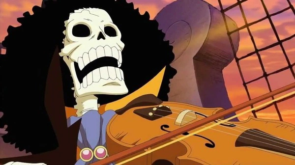
Quando entrou para a tripulação: Saga Thriller Bark / Arco Thriller Bark / Episódio 381
Akuma no Mi: Yomi Yomi no Mi (Fruta Revive-Revive)
Função no grupo: espadachim e músico
História
Nono pirata a integrar a tripulação dos Chapéus de Palha, Brook foi encontrado por Luffy e sua equipe em uma ilha fantasma conhecida como Thriller Bark, no Triângulo Florian. O pirata viveu lá por quase 50 anos após a morte de sua tripulação. Sua antiga equipe foi vítima de doenças e diferentes inimigos. Brook sobreviveu apenas graças à fruta Yomi Yomi no Mi, que lhe proporcionou uma segunda vida como um esqueleto imortal.
Brook acaba ajudando Luffy e sua equipe a lutar contra o perigoso Warlord do mar Gecko Moria, e ao final do arco Thriller Bark, episódio 381 mais especificamente, o músico pede a Luffy para entrar na tripulação, pedido aceito de imediato pelo capitão. Na tripulação, além de músico, ele é o segundo espadachim - com Zoro sendo o primeiro. Sua recompensa de $383.000.000.
Por baixo de sua personalidade excêntrica e cômica, Brook é extremamente sensível. A vontade de entrar para a tripulação se justifica tanto na sua paixão por navegar quanto pelo seu sonho de um dia reencontrar o filhote de baleia Laboon, adotado como mascote de sua antiga tripulaçã
Poderes
- Música: além de entreter com sua arte, Brook é capaz de usar sua música para influenciar as pessoas, e até fazer os oponentes adormecerem. Ele consegue tocar qualquer instrumento.
- Esgrima: extremamente habilidoso com a espada, é uma forte presença em batalha.
- Capacidades físicas aprimoradas: seu novo corpo esquelético lhe proporcionou grande velocidade, até da capacidade de saltar extraordinariamente alto e correr sobre a água.
- Projeção astral: Brook aprendeu a projetar seu espírito, conseguindo deixar seu esqueleto para trás enquanto se locomove como uma alma desencarnada.
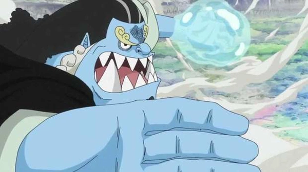
Quando entrou para a tripulação: Saga Yonkou / Arco Whole Cake / Episódio 833
Akuma no Mi: não possui
Função no grupo: timoneiro
História
Décimo integrante dos Piratas do Chapéu de Palha, Jinbei (ou Jinbe) é um homem-peixe da espécie tubarão-baleia. Durante a aclamada Saga Guerra de Marineford, no episódio 430, ele conhece Luffy e sua equipe e acaba os ajudando no mortal confronto.
O capitão dos Chapéu de Palha convida Jinbei para integrar a tripulação no episódio 568, no final da Saga Ilha dos Homens-Peixe. Apenas algum tempo depois do salto temporal de dois anos, ele aceita o convite. No Arco Whole Cake, episódio 833, Jinbei se alia à tripulação para impedir o plano dos Novos Piratas Homens-Peixe de fazerem um golpe de estado contra o Reino Ryugu. A partir daí, acaba integrando o grupo.
Seu grande sonho é, um dia, alcançar a coexistência pacífica e igualitária entre homens-peixe e humanos, como era o sonho de seu ex-capitão Fisher Tiger. Sua recompensa é de incríveis $1.100.000.000 e ele atua como timoneiro da tripulação.
Poderes
- Capacidades físicas sobre-humanas: além de possuir uma força inacreditável e uma grande velocidade, Jinbei tem grande tolerância a dor.
- Karatê Homem-Peixe: Jinbei é mestre em Karatê Homem-Peixe, um estilo de arte marcial que faz com que o pirata seja capaz de atingir inimigos a longas distâncias usando as partículas de água no ar para levar seus golpes; permite que ele controle a água (até mesmo a que existe dentro das pessoas) e se comunique com outras criaturas marinhas.
2. Marinha ⚓
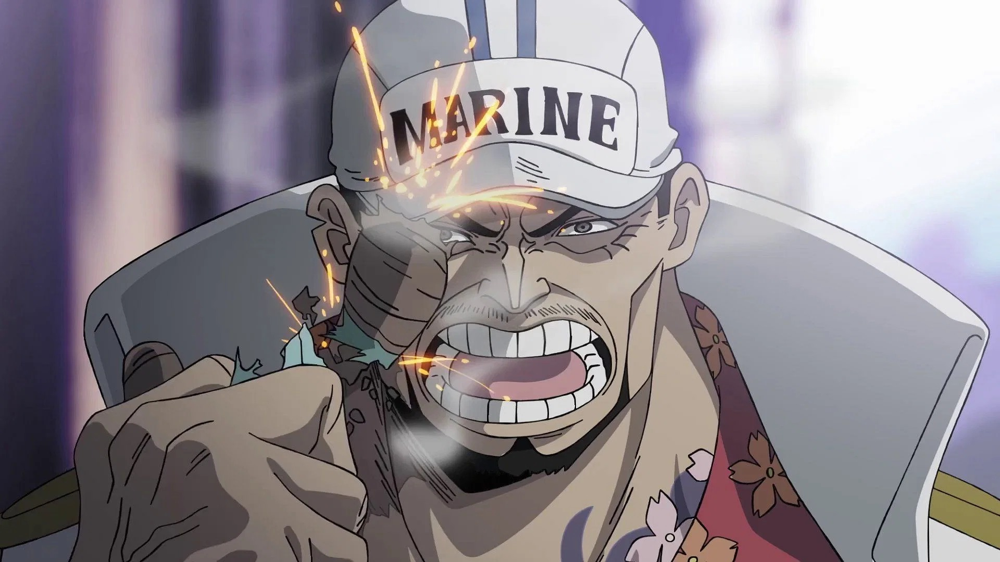
Quem é Akainu
Sakazuki, mais conhecido pelo codinome Akainu, é um dos principais antagonistas de One Piece e desempenha um papel central na Marinha. Ele é o atual Almirante da Frota (o cargo mais alto da Marinha) e é conhecido por sua implacável e extremamente rígida justiça absoluta. Aqui estão todos os detalhes sobre ele:
Poderes e Habilidades
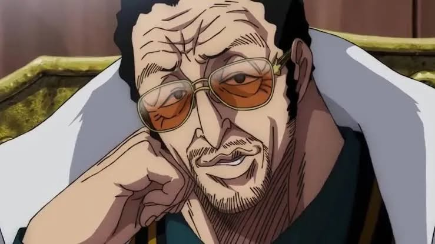
Quem é Kizaru
Borsalino, mais conhecido como Kizaru, é um dos almirantes da Marinha em One Piece. Ele é famoso por sua personalidade despreocupada, seu jeito lento de falar e seu incrível poder baseado na luz. Apesar de sua atitude relaxada, ele é extremamente poderoso e perigoso em combate.
Fruta do Diabo: Pika Pika no Mi (Fruta da Luz) ☀️⚡
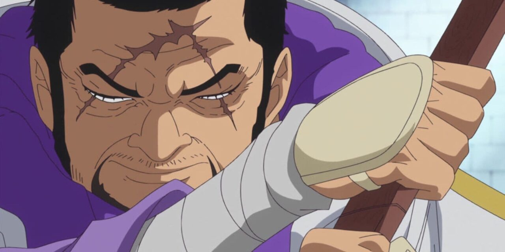
Quem é Fujitora
Fujitora, cujo nome verdadeiro é Issho, é um dos almirantes atuais da Marinha em One Piece. Ele é um dos personagens mais complexos da série, sendo uma figura que, apesar de sua posição de poder, mantém uma visão de justiça muito diferente da de outros almirantes como Akainu. A seguir, estão todos os detalhes sobre ele:
Poderes e Habilidades
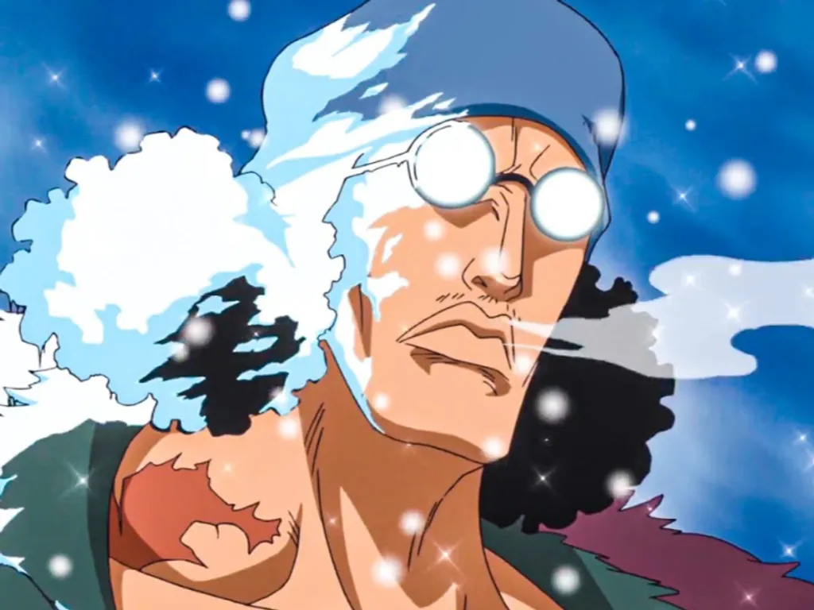
Quem é Aokiji
Aokiji, cujo nome verdadeiro é Kuzan, é um dos personagens mais complexos e misteriosos de One Piece. Ele foi um Almirante da Marinha antes de se tornar uma figura importante fora da organização. Aqui estão alguns detalhes sobre ele:
Poderes e Habilidades:
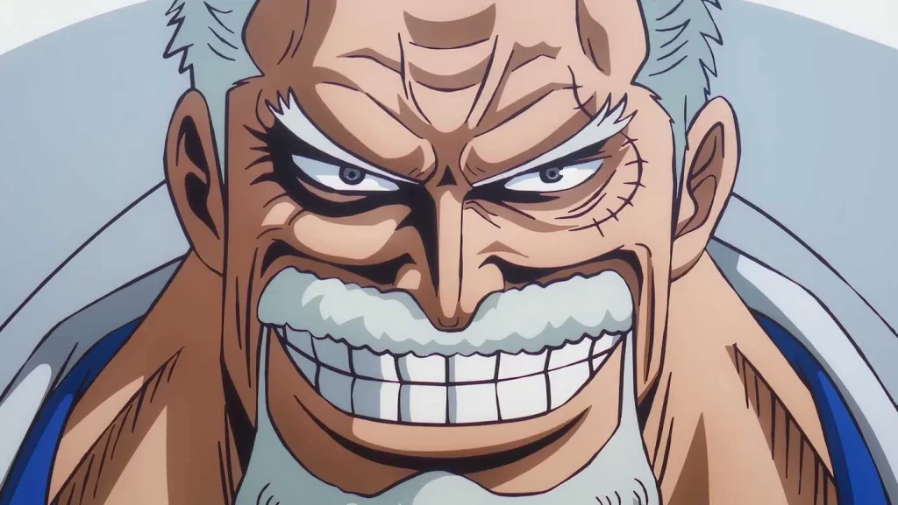
Quem é Garp?
Monkey D. Garp é um lendário vice-almirante da Marinha e um dos personagens mais poderosos e respeitados de One Piece. Ele é avô de Monkey D. Luffy e pai de Monkey D. Dragon, o líder dos Revolucionários. Garp é conhecido como o "Herói da Marinha", sendo uma das figuras que enfrentaram Gol D. Roger antes da sua execução.
Personalidade e Estilo de Luta Garp tem uma personalidade descontraída e brincalhona, mas também é extremamente rigoroso e dedicado ao que acredita. Ele tentou várias vezes fazer Luffy se tornar um marinheiro, mas sem sucesso. Ele é um lutador extremamente poderoso, usando Haki do Armamento em nível avançado e golpes físicos devastadores. Seu soco é tão forte que pode destruir montanhas!
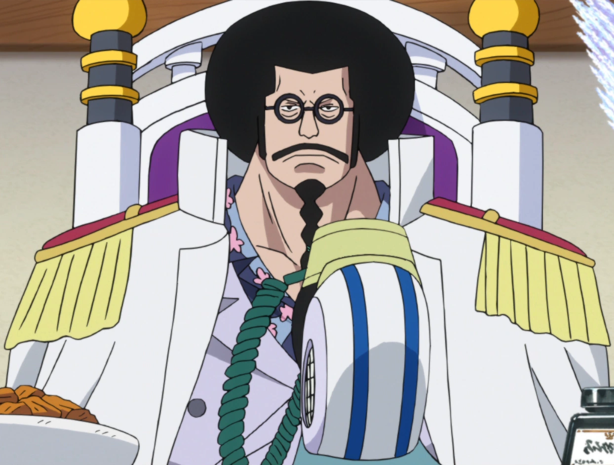
Quem é Sengoku?
Sengoku é um dos personagens mais importantes da Marinha em One Piece. Ele foi o Almirante de Frota durante grande parte da história e comandou as forças da Marinha na Guerra de Marineford. Após a guerra, ele se aposentou e foi substituído por Akainu (Sakazuki). Atualmente, ele trabalha como Inspetor Geral da Marinha, mantendo alguma influência dentro da organização.
Poderes e Habilidades
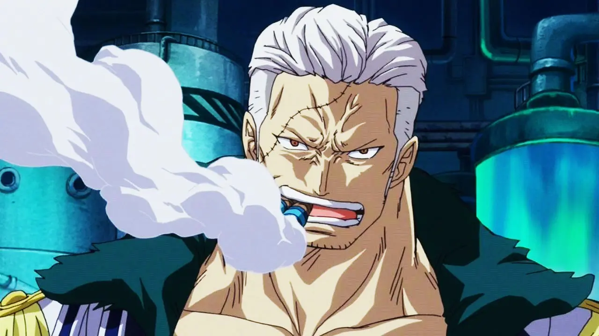
Quem é Smoker
Smoker, também conhecido como Smoker the White Hunter, é um personagem importante de One Piece. Ele é um oficial da Marinha, inicialmente apresentado como Comandante da Flotilha e mais tarde promovido a Vice-Almirante. Smoker é um dos primeiros personagens que o Luffy encontra no início da série, e ele desempenha um papel relevante ao longo da história. Aqui estão os detalhes sobre ele:
Poderes e Habuilidades
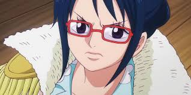
Quem é Tashigi
Tashigi é uma personagem da Marinha em One Piece, inicialmente introduzida como Tenente Comandante e, mais tarde, promovida a Capitã. Ela tem uma história interessante, sendo uma das poucas mulheres de destaque na Marinha, e sua personalidade é marcada por um forte senso de justiça e lealdade. Aqui estão todos os detalhes sobre ela:
Poderes e Habilidades
Vilões e Antagonistas de One Piece
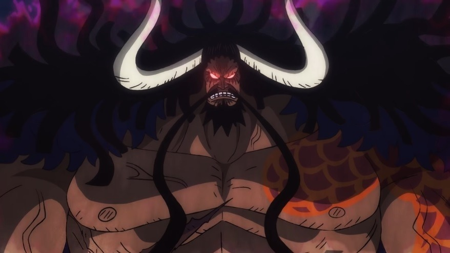
Quem é Kaido - O Rei das Feras
Um dos Quatro Imperadores e líder dos Piratas das Bestas.
Kaido é um dos personagens mais poderosos e temidos de One Piece. Ele foi um dos Yonkou (Quatro Imperadores) e líder dos Piratas das Feras, governando a ilha de Onigashima em Wano. Conhecido como a "Criatura Mais Forte do Mundo", Kaido era quase invulnerável e possuía uma força monstruosa.
Personalidade e Filosofia
Kaido acreditava na sobrevivência do mais forte. Ele queria criar um mundo de guerra eterna, onde apenas os mais poderosos reinassem. Para isso, ele planejava usar armas e transformar Wano em uma fortaleza militar. Ele era extremamente cruel e impiedoso, massacrando inimigos sem hesitar. No entanto, ele também respeitava adversários poderosos e valorizava guerreiros que enfrentavam a morte sem medo.
Poderes e Habilidades
Fruta do Diabo: Uo Uo no Mi, Modelo Seiryu (Dragão Azul)
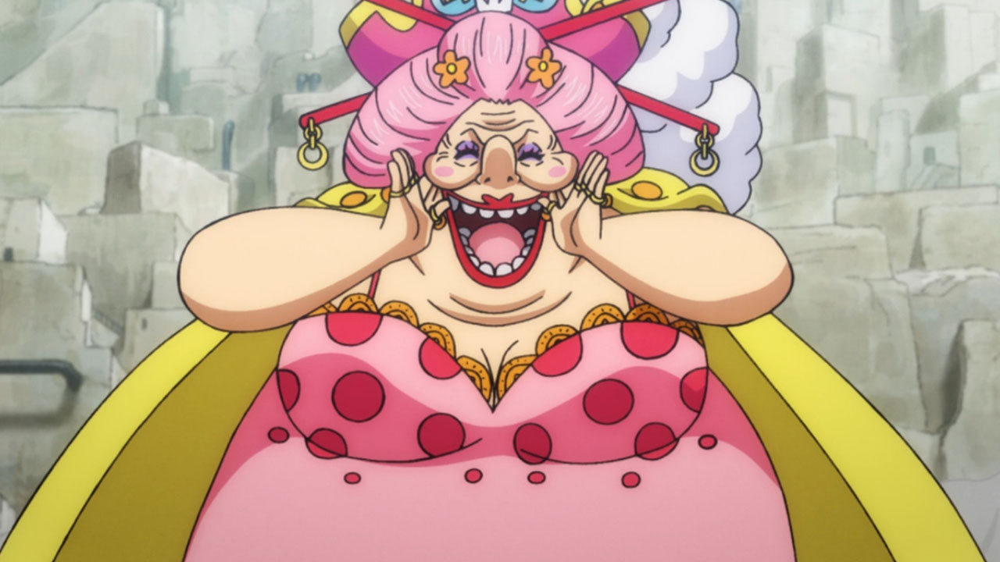
Quem é Big Mom - A Imperatriz dos Mares
Charlotte Linlin, mais conhecida como Big Mom, foi uma das Yonkou (Quatro Imperadores) e capitã dos Piratas da Big Mom. Governava Totto Land, uma nação onde todas as raças viviam sob seu comando. Extremamente poderosa, Big Mom era conhecida por sua força sobre-humana, resistência absurda e sua Fruta do Diabo, que lhe permitia manipular almas.
Personalidade e Filosofia
Big Mom era uma mulher cruel, gananciosa e implacável. Ela valorizava alianças e a união entre
raças,
mas apenas se fosse do jeito dela. Seu maior sonho era criar uma nação onde todas as raças vivessem
juntas, mas sob seu governo absoluto.
Ela sofria de ataques de fome, nos quais entrava em fúria incontrolável quando não conseguia a
comida
que desejava. Nessas crises, destruía tudo ao seu redor, atacando aliados e inimigos sem distinção.
Apesar de amar sua "família", via seus filhos mais como peças estratégicas para alianças políticas
do
que como entes queridos.
Poderes e Habilidades
Big Mom era uma das personagens mais fortes de One Piece, combinando força física monstruosa, resistência e uma Fruta do Diabo extremamente poderosa.
Fruta do Diabo: Soru Soru no Mi
Big Mom comeu a Soru Soru no Mi, uma Paramecia que lhe permitia manipular almas e dar vida a objetos.
Principais poderes:
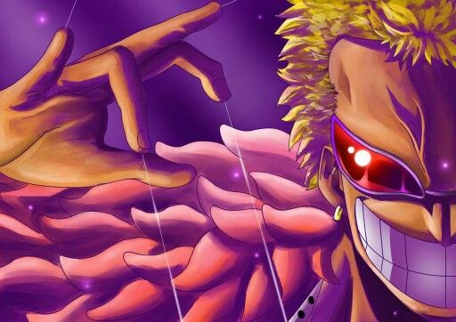
Quem é Donflamingo
Antagonista importante, líder dos Piratas Donquixote e ex-Shichibukai.
Donquixote Doflamingo é um dos personagens mais marcantes de One Piece, sendo o principal antagonista do Arco de Dressrosa. Ele é um ex-Shichibukai, ex-nobre mundial e o líder da Família Donquixote, além de ser um dos criminosos mais influentes do submundo, conhecido como "Joker".
Habilidades e Poderes
Akuma no Mi: Ito Ito no Mi (Fruta do Fio)
Doflamingo possui a Ito Ito no Mi, uma fruta do tipo Paramecia que lhe permite criar e manipular fios quase indestrutíveis. Ele pode usá-los para:
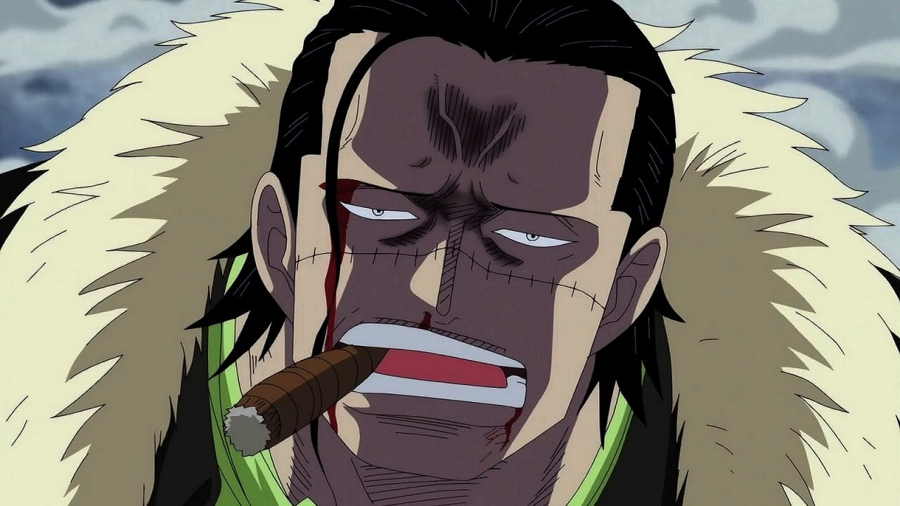
Quem é Crocodile
Sir Crocodile é um dos vilões mais icônicos de One Piece, sendo o principal antagonista do Arco de Alabasta e ex-líder da organização criminosa Baroque Works. Ele foi um dos Shichibukai e atualmente é um dos líderes da Cross Guild, ao lado de Dracule Mihawk e Buggy.
Habilidades e Poderes
Akuma no Mi: Suna Suna no Mi (Fruta da Areia)
Crocodile possui a Suna Suna no Mi, uma fruta do tipo Logia que lhe permite criar, controlar e se transformar em areia. Algumas das suas habilidades incluem:
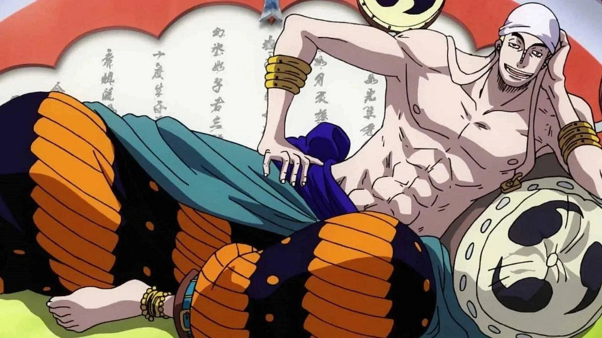
Quem é Enel
Enel é um dos vilões mais poderosos e memoráveis de One Piece, sendo o principal antagonista do Arco de Skypiea. Ele se autoproclamava "Deus" e governava a ilha flutuante com um poder absoluto, graças à sua incrível Akuma no Mi do raio.
Autoproclamado Deus de Skypiea, usuário da Goro Goro no Mi.
Habilidades e Poderes
Akuma no Mi: Goro Goro no Mi (Fruta do Relâmpago)
Enel possui a Goro Goro no Mi, uma Logia extremamente poderosa, que lhe concede controle total sobre a eletricidade. Entre seus poderes estão:
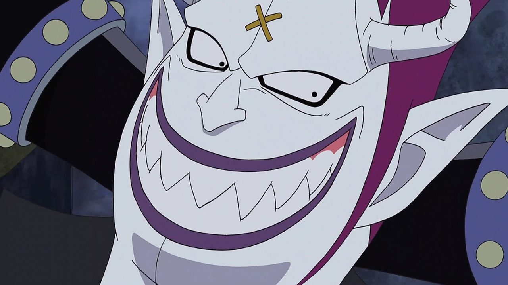
Quem é Gecko Moria
Gecko Moria é um ex-Shichibukai e o capitão dos Piratas do Thriller Bark em One Piece. Ele é o principal antagonista do Arco Thriller Bark e possui o poder da Kage Kage no Mi (Fruta da Sombra-Sombra), uma Akuma no Mi do tipo Paramecia que lhe permite manipular sombras.
Habilidades e Poderes
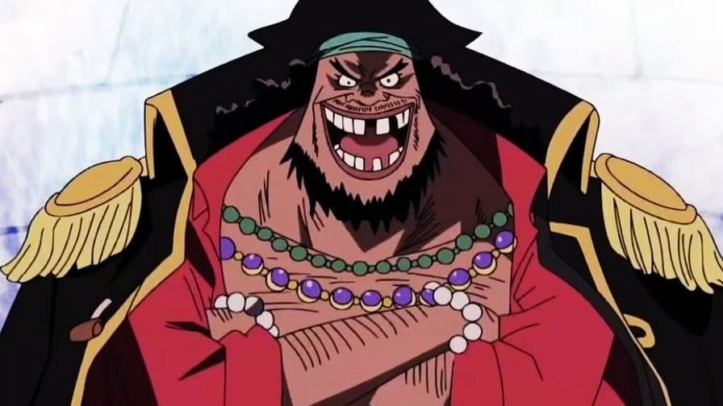
Quem é Barba Negra
Marshall D. Teach, mais conhecido como Barba Negra, é um dos personagens mais enigmáticos e perigosos de One Piece. Ele é o capitão dos Piratas do Barba Negra, um dos Quatro Imperadores (Yonkou), e o único personagem conhecido por possuir o poder de duas Akuma no Mi. Sua ambição e crueldade o tornam uma das maiores ameaças no mundo de One Piece.
Habilidades e Poderes
Teach se destaca por ser o único personagem na história conhecido por possuir duas Akuma no Mi, algo que teoricamente deveria ser impossível.
1️⃣ Yami Yami no Mi (Fruta da Escuridão) – Paramecia
2️⃣ Gura Gura no Mi (Fruta do Tremor) – Paramecia
O Único pirata que roubou a Yami Yami no Mi e a Gura Gura no Mi.
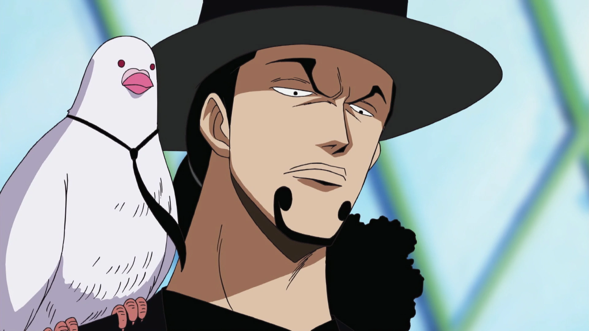
Quem é Rob Lucci
Rob Lucci é um dos agentes mais poderosos do Governo Mundial, membro da CP0 e ex-líder da CP9. Ele é um mestre do Rokushiki e um usuário da Akuma no Mi Zoan, tornando-se um dos lutadores mais formidáveis da série.
Habilidades e Poderes
Neko Neko no Mi, Modelo: Leopardo – Zoan Carnívoro
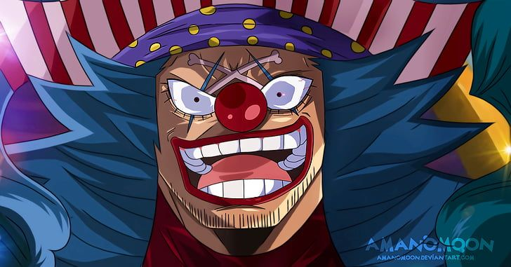
Quem é Buggy
Buggy, o Palhaço – Líder dos Piratas do Buggy. É um dos personagens mais icônicos e cômicos de One Piece. Apesar de seu jeito atrapalhado, ele conseguiu se tornar um dos Quatro Imperadores do Mar (Yonkou). líder da organização mercenária Buggy’s Delivery e um antigo membro da tripulação do lendário Gol D. Roger.
Habilidades e Poderes
1️⃣ Bara Bara no Mi (Fruta do Corte) – Paramecia
2️⃣ Carisma e Manipulação
3️⃣ Resistência e Sorte
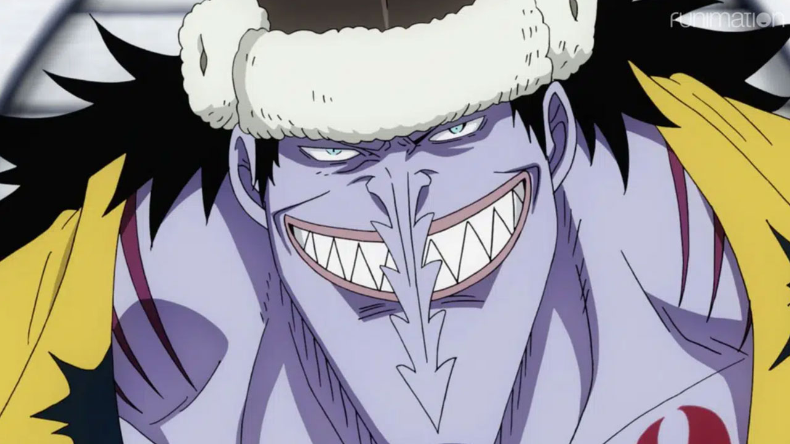
Quem é Arlong
Arlong é um dos primeiros grandes vilões de One Piece, sendo o capitão dos Piratas do Arlong e um dos principais antagonistas do arco de Arlong Park. Ele é um homem-peixe da espécie tubarão-serra, conhecido por seu ódio pelos humanos e sua extrema crueldade. Arlong é o líder dos Piratas do Arlong.
Habilidades e Poderes
3️⃣ Combate Subaquático
4️⃣ Armas – Kiribachi (Serra de Tubarão)
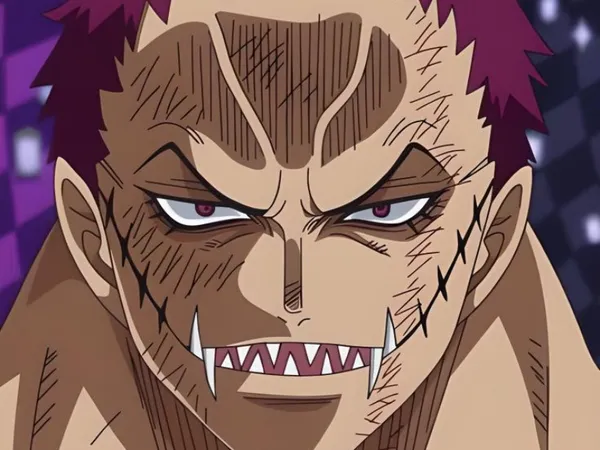
Quem é Charlotte Katakuri
Charlotte Katakuri é um dos personagens mais impressionantes de One Piece. Ele é o segundo filho da Família Charlotte, o Ministro da Farinha e o comandante mais forte dos Piratas da Big Mom. Sua presença intimidadora e habilidades incríveis fazem dele um dos adversários mais respeitados que Luffy já enfrentou.
Habilidades e Poderes
Lendas de One Piece
Shanks, também conhecido como "Shanks, o Ruivo", é um dos Yonkou e ex-membro dos Piratas do Roger. Ele é o responsável por inspirar Luffy a se tornar um pirata.
História e Passado
Poderes e Habilidades
Haki
Shanks é um dos personagens mais habilidosos no uso de Haki em One Piece. Ele é um dos poucos que não possuem Akuma no Mi, confiando inteiramente em suas habilidades físicas e em Haki.
Combate com Espada
Shanks é um espadachim extremamente habilidoso, sendo ex-rival de Dracule Mihawk, o melhor espadachim do mundo. Sua espada se chama Gryphon, e ele a usa combinada com Haki avançado para golpes poderosos.
Kozuki Oden
Quem é Kozuki Oden
Oden foi o Daimyo de Kuri em Wano e um antigo membro dos Piratas do Roger. Ele sonhava em abrir as fronteiras de Wano e morreu heroicamente defendendo seus ideais.
História
Oden nasceu na família Kozuki, uma linhagem de grandes artesãos de Poneglyphs e governantes legítimos de
Wano. Desde pequeno, era extremamente rebelde, indisciplinado e incrivelmente forte, sendo exilado
diversas vezes por seu comportamento selvagem.
Mesmo assim, Oden provou seu valor ao conquistar Kuri, uma região sem lei dominada pelo criminoso Ashura
Doji, transformando-a em um local pacífico e próspero. Isso fez com que seu pai o nomeasse Daimyo de
Kuri.
Viagem com Barba Branca e Roger
Oden sempre sonhou em sair de Wano e explorar o mundo. Ele conseguiu se infiltrar no navio dos Piratas do Barba Branca e, após mostrar sua força, foi aceito como comandante da 2ª divisão da tripulação.
Após essa jornada, ele retornou a Wano para cumprir sua responsabilidade como herdeiro legítimo do país.
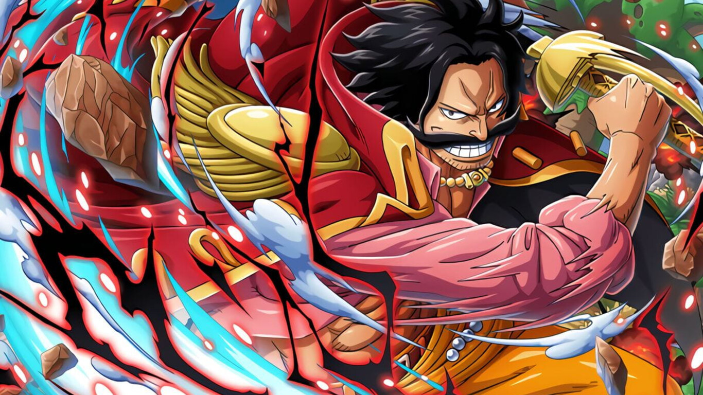
Gol D. Roger
Quem é Gol D. Roger
Gol D. Roger foi o capitão dos lendários Piratas do Roger e o único a conquistar a Grand Line, encontrando o One Piece. É uma das figuras mais importantes da história de One Piece, sendo o único homem a conquistar a Grand Line e descobrir os segredos do mundo. Ele foi o Rei dos Piratas e o responsável por iniciar a grande era da pirataria.
Poderes e Habilidades
Haki
Gol D. Roger era considerado um dos piratas mais fortes da história e não possuía nenhuma Akuma no Mi. Ele confiava completamente em suas habilidades físicas e em seu Haki supremo:
Combate com Espada
Roger empunhava uma espada chamada Ace, uma lâmina poderosa que usava junto ao Haki para lançar golpes de energia destrutivos. Seu estilo de luta era parecido com o de Shanks e Rayleigh, usando força bruta e técnica refinada. Ele foi forte o suficiente para lutar de igual para igual contra Barba Branca, um dos homens mais poderosos do mundo.
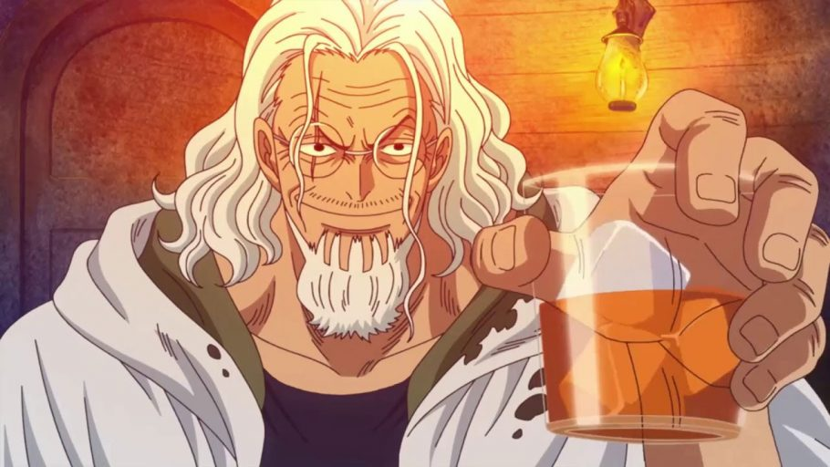
Quem é Silvers Rayleigh
Silvers Rayleigh, também conhecido como o "Rei das Trevas" (冥王, Mei-Ō), é um personagem icônico do anime e mangá One Piece, criado por Eiichiro Oda. Ele foi o primeiro imediato dos Piratas do Roger e é um dos personagens mais poderosos da obra. Rayleigh é extremamente sábio, calmo e tem um grande senso de humor. Apesar de ser um pirata lendário, ele é bastante humilde e não gosta de se exibir. Ele vive uma vida pacífica como um revestidor de navios na Ilha Sabaody, ajudando outros piratas a irem para a Grand Line. É um mentor muito paciente e generoso, como demonstrado quando treinou Luffy durante os dois anos de timeskip, ensinando-o sobre o Haki. Além disso, é leal e sente muito orgulho de seus antigos companheiros, especialmente de Gol D. Roger
Poderes e Habilidades
Rayleigh é um dos personagens mais fortes da série, mesmo na velhice. Algumas de suas habilidades incluem:
Haki Avançado
Rayleigh é um mestre absoluto em todas as três formas de Haki:
Espadachim Lendário
Rayleigh é um espadachim extremamente habilidoso, capaz de enfrentar o Almirante Kizaru sem problemas, mesmo depois de anos sem lutar ativamente.
Força e Agilidade sobre-humanas
Apesar da idade avançada, ele ainda tem força e reflexos impressionantes. Ele nadou de Sabaody até Amazon Lily, atravessando o Calm Belt, onde monstros marinhos gigantes habitam.
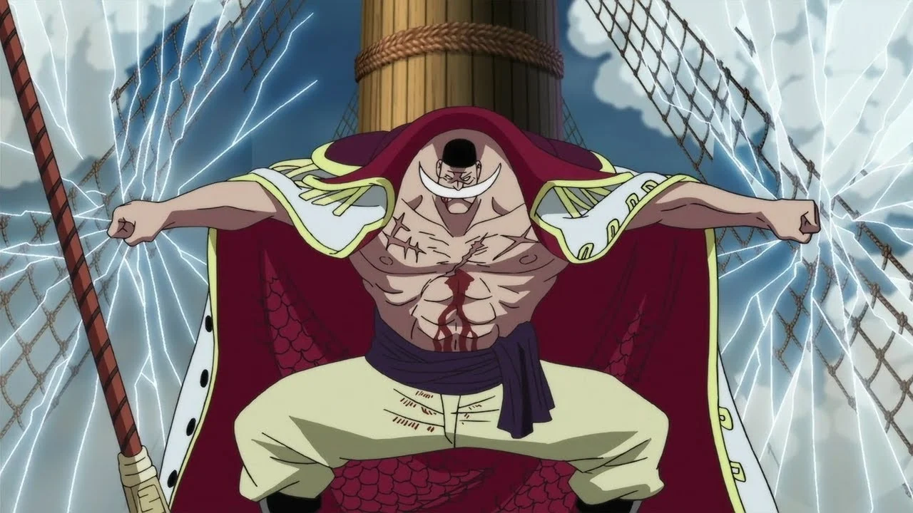
Quem é Barba Branca
Líder dos Piratas do Barba Branca e um dos piratas mais fortes de todos os tempos.
Edward Newgate, mais conhecido como Barba Branca, foi um dos piratas mais poderosos e influentes do mundo de One Piece. Ele era o capitão dos Piratas do Barba Branca e um dos Yonkou (Quatro Imperadores) até sua morte. Conhecido como o "Homem Mais Forte do Mundo", Barba Branca era uma lenda dos mares e teve um papel fundamental na Guerra de Marineford.
Personalidade e Filosofia
Barba Branca era um pirata de coração bondoso, apesar de sua aparência temível. Diferente da maioria
dos
piratas que buscavam tesouros ou poder, seu maior desejo era ter uma família. Ele via seus
tripulantes
como filhos e os protegia com todas as forças. Sua lealdade e compaixão fizeram dele um dos
personagens
mais respeitados no mundo de One Piece.
Mesmo sendo um dos homens mais fortes, ele nunca atacava inocentes e tinha um código de honra
rígido.
Ele acreditava na liberdade dos mares e se recusava a deixar qualquer um de seus filhos ser
prejudicado.